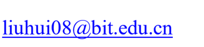

|
I am a
Professor in the School of Computer Science and Technology at the Beijing Institute of
Technology. I was formerly a graduate student at the Software Engineering Institute, Peking University. I defended my PhD
thesis in June 2008.
My research interests include deep learning based
software engineering, in particular: deep learning based program generation;
software refactoring; automatic program repair; software quality; machine
learning based code complete; automatic construction of software engineering
datasets. My work is funded in part by the National Natural Science Foundation
of China, and the National Key Research and Development Program of China.
I am a recipient of the RE'2021 best research paper award (2021), IET Software
Premium Award (2018), New Century Excellent Talents in University (2013), and
Beijing Higher Education Young Elite Teacher (2013). I am also a distinguished
member of China Computer Federation (中国计算机学会杰出会员)
I am always looking for self-motivated
students to work with me. Contact me by eMail if
you are interested in deep learning, software engineering, natural language
processing, or data mining.
Doctoral Students
- Bo Liu (2021-): Deep learning-based software
development.
- Taiming Wang (2020-): Deep learning-based software
development.
- Hanlin Tang (2019-, co-advised by Prof. Hong Mei):
Deep learning based software development. [SCIENCE CHINA2020]
- Yamin Hu (2019-): Deep Learning based software
development. [ICSE2021 ]
- Lin Jiang (2017-, co-advised by Prof. Hong Mei):
Deep learning based software development. [ASE2019] [TSE2020]
- Yanjie Jiang (2018-): Software quality and refactoring
[TSE2018] [FSE 2019] [ISSTA 2020] [TSE2020 ] [ICSE2021 ] [ICSE2021-2][FSE
2021]
- Leping Li (2017-): Automatic program repair
Master Students
- Kejun Li (2019-): Software quality and refactoring [APSEC 2021]
- Qingqing Jiao (2019-):
Software quality and refactoring
 Yingchen Tian (2019-): Software quality and refactoring [软件学报2021]
Yingchen Tian (2019-): Software quality and refactoring [软件学报2021]
- Yahui Li (2020-): AI-based software testing
- Xiaoqing Luo (2020-): Software testing
- Zhihao Zhu (2020-): Software testing
- Xiang Liu (2020-): Natural language
processing for SE
- Xiaye Chi (2021-): Software refactoring and recommendation
- Zimao Xu (2021-): Software refactoring and
recommendation
- Chenxi Du (2021-): Open-source software development
- Ranchi Ma (2021-): Software testing
Former Students
- Doctoral
- Guangjie Li (Ph.D. 2020, Dissertation title: " Program Analysis Based on Semantics of
Identifiers") [SANER2020] [SCIENCE CHINA2020][ACM Computing Surveys]
- Qasim Umer (Ph.D. 2020, Dissertation title: " Machine Learning Based Classification of Bug
Reports") [IEEE Transactions on
Reliability 2019][JSS
2019][SANER 2020] [RE 2019][EMSE 2020] (Assistant professor at
COMSATS University Islambad, Pakistan)
- Lei Qiao
(2016-2021): (Ph.D. 2021, Dissertation title:
" AI-based Prediction of Software Defects")
- Master
o
Jiahao Jin (2018-2021):
Deep learning based software development, Software Quality [TSE2019] [TSE2020] [ISSTA2020]
o
Mingzhu Shen (2018-2021):
Deep learning based software development, Software Quality [TSE2020] [ISSTA2020]
o
Miaoying Wang (2018-2021):
Compiler testing [APSEC 2020]
o
Jiaqi Zhu (2020) [TSE2020]
(Bank of China)
o
Zhifeng Xu (2019) [ASE2018] (MIIT,
China)
o
Rui Sun (2019) [ICSR2019] (Baidu)
o
Yifan Bu (2019) [TSE2019] [Journal of
Software, Best
paper award from NASAC2018](USA)
o
Yan Wang (2019)
(Baidu)
o
Chao Li (2018) [Journal
of Software](Baidu)
o
Yuting Wu (2017) [SANER2016](Ningxia University)
o
Qiurong Liu (2017) [ICSE2016] [TSE2015] [TSE2016][Nominated for Excellent Master's thesis award by the Chinese
Institute of Electronics](Peking University at Hangzhou)
o
Yang Liu (2016) [IET
Software, Best
paper award](Oracle)
o
Zhouding Wang (2014) (start a business)
o Xue Guo (2013) [TSE2013] [National Excellent Engineering Master Award](Shanxi University)
Teaching
- Graduate Course
- Frontiers of Computer Science, 2014-
- Software Architecture,
2008-2015
- Undergraduate Courses
- Software Testing, 2010-
- Object-Oriented
Software Design, 2013
Community (Since 2020)
- 2020: ICSME PC, SANER PC, RE Posters and Demos Track PC, COMPSAC PC, Internetware PC, IET Software AE, EMSE
Guest AE, JSS
Guest AE
- 2021: ICSME PC, SANER PC, Internetware PC, COMPSAC PC, IET
Software AE, IEEE Access AE
Research (Full publication list
available at DBLP)
- Deep Learning-based
Software Engineering （中国计算机学会推荐A类顶级国际期刊/会议）
[1].
Hui Liu*, Mingzhu Shen, Jiaqi Zhu, Nan Niu,
Ge Li and Lu Zhang, "Deep
Learning Based Program Generation from Requirements Text: Are We There Yet?"
in IEEE Transactions on Software Engineering (IEEE TSE), Online 2020 [Tools and Dataset]
[2].
Lin Jiang,
Hui Liu*,
He Jiang, Lu Zhang and Hong Mei, "Heuristic and Neural
Network based Prediction of Project-Specific API Member Access," in
IEEE Transactions on Software Engineering (IEEE
TSE), Online 2020) [Tools and Dataset]
[3].
Lin.
Jiang, Hui Liu*, and He Jiang, "Machine Learning Based
Recommendation of Method Names: How Far are We",34th
IEEE/ACM International Conference on Automated Software Engineering (ASE), San Diego, CA, USA, 2019, pp.
602-614. [Tools and Dataset]
[4].
Hui Liu*,
Jiahao Jin, Zhifeng Xu, Yifan Bu, Yanzhen. Zou and Lu
Zhang, "Deep
Learning Based Code Smell Detection", in IEEE Transactions on Software
Engineering (IEEE TSE), vol. 47, no.
09, pp. 1811-1837, 2021. DOI: 10.1109/TSE.2019.2936376 [Tools
and Dataset]
[5].
Hui Liu; Zhifeng Xu; Yanzhen Zou, "Deep Learning Based Feature
Envy Detection", 33rd IEEE/ACM International Conference on Automated
Software Engineering (ASE),
Montpellier, France, 2018, pp. 385-396 [Tools and Dataset]
- Software Evolution and
Software Quality （中国计算机学会推荐A类顶级国际期刊/会议）
[1].
Yanjie
Jiang, Hui Liu*, Yuxia
Zhang, Nan Niu, Yuhai Zhao Lu Zhang. Which
Abbreviations Should Be Expanded? The ACM Joint European
Software Engineering Conference and Symposium on the Foundations of Software
Engineering (ESEC/FSE), pp.578-589, 2021
[2].
Yanjie
Jiang, Hui Liu*, Nan Niu, Lu Zhang, Yamin Hu. Extracting Concise Bug-Fixing Patches from
Human-Written Patches in Version Control Systems. The 43rd
International Conference on Software Engineering (ICSE), pp. 686-698, 2021 [Tools][Bug Repository]
[3].
Hui Liu, Minzhu Shen, Jiahao Jin, Yanjie
Jiang. Automated
Classification of Actions in Bug Reports of Mobile Apps. The 29th ACM
SIGSOFT International Symposium on Software Testing and Analysis (ISSTA), July 18-22, 2020, Los Angeles,
CA, USA [Tools
and Dataset]
[4].
Yanjie.
Jiang, Hui Liu*, Jiahao
Jin and Lu. Zhang, "Automated
Expansion of Abbreviations Based on Semantic Relation and Transfer Expansion,"
in IEEE Transactions on Software Engineering (IEEE TSE), Online 2020 [Tools and Dataset]
[5].
Yangjie Jiang, Hui. Liu*,
Jiaqi Zhu and Lu Zhang, "Automatic and Accurate
Expansion of Abbreviations in Parameters," in IEEE Transactions on
Software Engineering (IEEE TSE), vol.
46, no. 7, pp. 732-747, 1 July 2020 [Tools and Dataset]
[6].
Yanjie
Jiang, Hui Liu*, and Lu Zhang. 2019. Semantic Relation based
Expansion of Abbreviations. In Proceedings of the 27th ACM Joint Meeting on
European Software Engineering Conference and Symposium on the Foundations of
Software Engineering (ESEC/FSE 2019).
Association for Computing Machinery, New York, NY, USA, 131-141[Tools
and Dataset]
[7]. Hui Liu*, Jiahao Jin, Zzhifeng
Xu, Yifan Bu, Yanzhen. Zou
and Lu Zhang, "Deep
Learning Based Code Smell Detection", in IEEE Transactions on Software
Engineering (IEEE TSE), Online 2019.
[Tools and Dataset]
[8]. He Jiang, Dong Liu, Xin Chen, Hui Liu, and Hong Mei. How Are Design Patterns Concerned by Developers? In Proceedings of the 41st International Conference on Software Engineering: Companion Proceedings (ICSE '19). IEEE Press, 232-233.
[9].
Hui Liu; Zhifeng Xu; Yanzhen Zou, "Deep Learning Based Feature
Envy Detection", 33rd IEEE/ACM International Conference on Automated
Software Engineering (ASE),
Montpellier, France, 2018, pp. 385-396 [Tools and Dataset]
[10]. Hui Liu*, Qiurong Liu, Cristian-Alexandru Staicu, Michael Pradel, Yue Luo. Nomen est Omen: Exploring
and Exploiting Similarities between Argument and Parameter Names. The 38th
International Conference on Software Engineering (ICSE), 1063-1073，May 14 - 22, 2016, Austin, TX, USA)
[11]. Hui Liu*, Qiurong Liu, Zhendong
Niu, Yang Liu. Dynamic and Automatic Feedback-Based
Threshold Adaptation for Code Smells Detection, IEEE Transactions on
Software Engineering (IEEE TSE), vol.42,
no.6, pp.544-558, 2016[Tools
and Dataset]
[12]. Hui Liu*, Qiurong Liu, Yang Liu, Zhouding Wang, Identifying Renaming
Opportunities by Expanding Conducted Rename Refactorings, IEEE Transactions
on Software Engineering (IEEE TSE), vol.41,
no.9, pp.887-900, Sept. 1 2015 [Tools and Dataset]
[13]. Hui Liu*, Xue Guo, and Weizhong
Shao, Monitor-based
Instant Software Refactoring, IEEE Transactions on Software Engineering (IEEE TSE), Volume
39, No. 8, pp. 1112-1126, Aug., 2013 [Tools and Dataset]
[14]. Hui Liu*, Qiurong Liu, Zhendong Niu, Yang Liu. Dynamic and Automatic Feedback-Based Threshold Adaptation for Code Smells Detection, IEEE Transactions on Software Engineering (IEEE TSE), vol.42, no.6, pp.544-558, 2016[Tools and Dataset]
[15]. Hui Liu*, Zhiyi Ma, Weizhong
Shao, and Zhendong Niu, Schedule of Bad Smell
Detection and Resolution: A New Way to Save Effort, IEEE Transactions on
Software Engineering (IEEE TSE), vol.38,
no.1, pp.220-235, Jan.-Feb. 2012
[16]. Hui Liu*, Zhiyi Ma, Weizhong
Shao, and Zhendong Niu, Schedule of Bad Smell
Detection and Resolution: A New Way to Save Effort, IEEE Transactions on
Software Engineering (IEEE TSE), vol.38,
no.1, pp.220-235, Jan.-Feb. 2012
[17]. Hui Liu, Limei Yang, Zhendong Niu, Zhyi Ma, and Weizhong Shao. Facilitating Software
Refactoring with Appropriate Resolution Order of Bad Smells. Proceedings of
the 7th joint meeting of the European software engineering conference and the
ACM SIGSOFT symposium on the foundations of software engineering (ESEC/FSE '09),
August 2009, Pages 265-268 (short paper)
[18]. Hui Liu, Ge Li*, Zhiyi Ma*, and Weizhong Shao*. Scheduling of Conflicting
Refactorings to Promote Quality Improvement. In Proceedings of the
twenty-second IEEE/ACM international conference on Automated software
engineering (ASE '07). Association for Computing Machinery, New York, NY, USA,
489-492. (short paper)